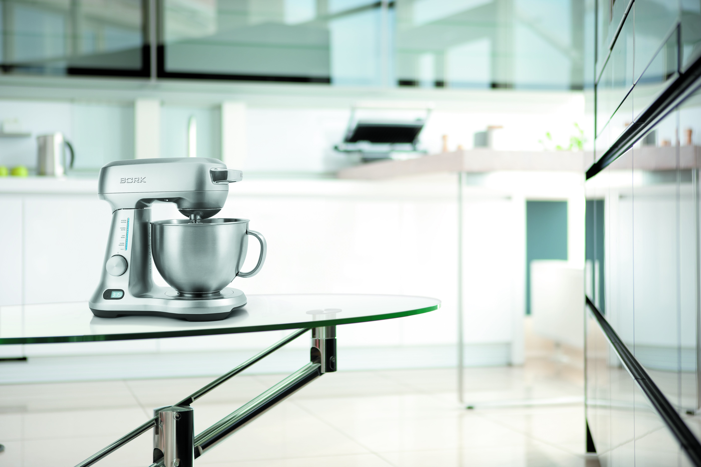
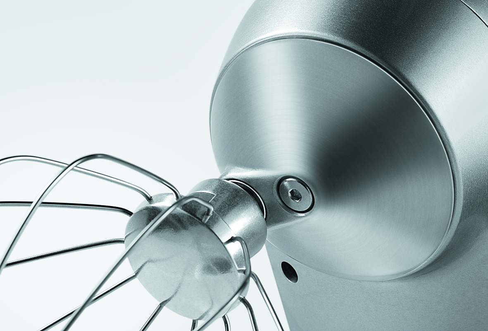
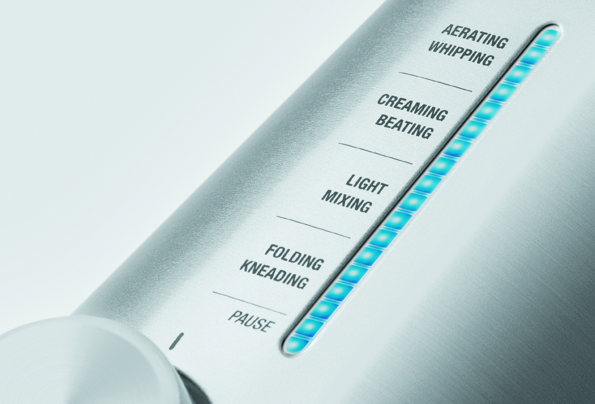
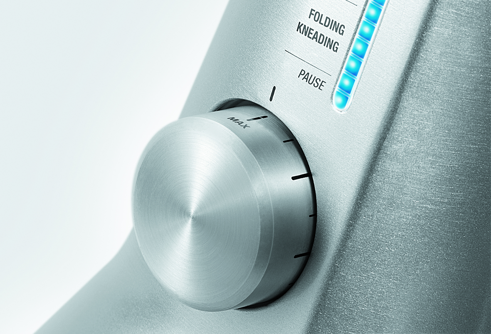
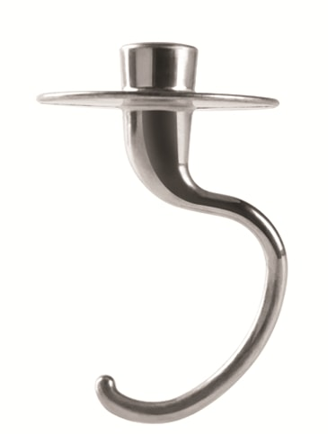
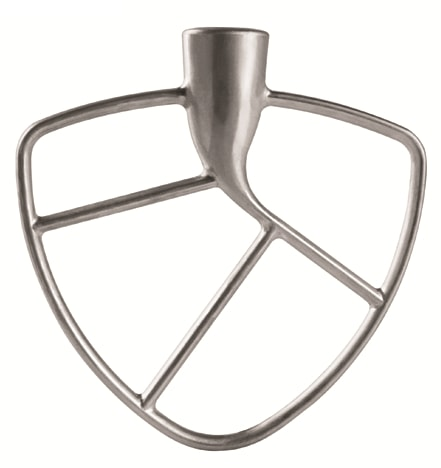
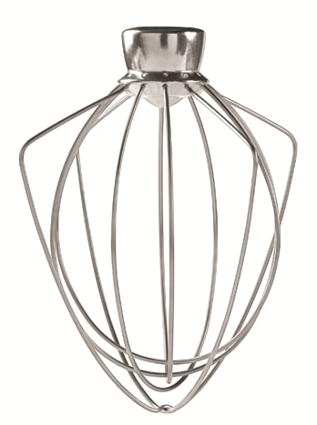
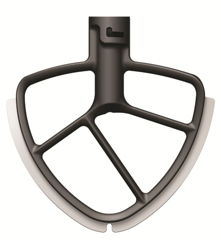
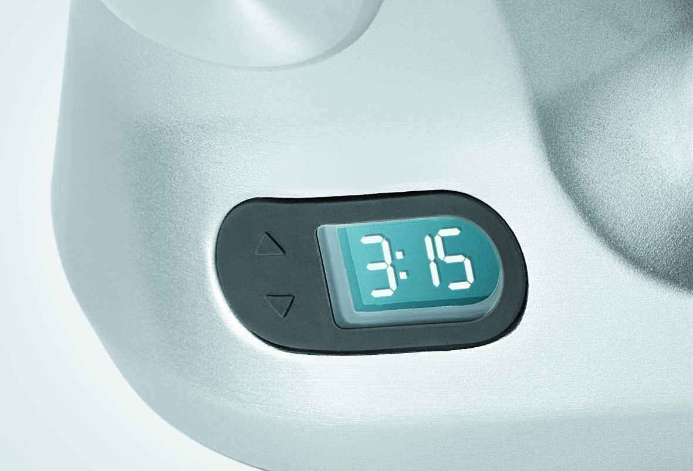

Миксер BORK B810
Замешивание — самый важный процесс в выпечке. Оно требует особого отношения, деликатности и терпения. Человеческие эмоции переменчивы, а планетарный миксер BORK всегда в подходящем для выпечки настроении.
Высокая мощность 1000 Вт
Надежный двигатель высокой мощности 1000 Вт позволяет быстро и эффективно смешивать ингредиенты разной консистенции для самых разнообразных кулинарных целей
Планетарная система смешивания
Система управления оптимизирует мощность двигателя для различных видов загрузки и позволяет подобрать идеальную скорость в зависимости от типа и количества ингредиентов.
2 режимов работы
Плавная регулировка 12 скоростей с выбором одного из 4 режимов:
- 1-3 скорость, режим Замешивания (Folding Kneading)
- 4-6 скорость, режим Перемешивания (Light mixing)
- 7-9 скорость, режим Взбивания (Creaming beating)
- 10-12 скорость, режим Вспенивания (Aerating whipping)
Всегда начинайте смешивание на низкой скорости, чтобы предотвратить разбрызгивание.
Режим пауза
В режиме Пауза вы можете оценить, как идет смешивание, или добавить дополнительные ингредиенты, не сбивая настроек таймера. Поверните регулятор скорости по часовой стрелке в положение минимальной скорости и постепенно увеличивайте ее до необходимой. В режиме Пауза двигатель отключается, а таймер приостанавливает отсчет времени. Чтобы продолжить смешивание, поверните регулятор в положение необходимой скорости, при этом таймер продолжит прямой или обратный отсчет времени.
Вместительная чаша
Стальная чаша объемом 4,7 л с удобной ручкой для переноса, просто и надежно крепится в нише. Чаша снабжена съемным пластиковым ободом для защиты от брызг и желобом для добавления ингредиентов во время работы.
Эксклюзивный комплект насадок
Насадка ТЕСТОМЕС — для замешивания плотного теста (хлеб, пицца, коржи для тортов).
Насадка КУЛИНАР — для замешивания теста для кондитерских изделий (смеси для тортов, печенья, кексов).
Насадка ВЗБИВАТЕЛЬ — для взбивания жидких смесей (молоко, сливки, яйца и т.п.).
Насадка КОНДИТЕР — для замешивания, как легких смесей, так и для теста (глазурь, крем, картофельное пюре, тесто для бисквита).
Наденьте насадку на привод двигателя таким образом, чтобы штифт насадки попал в паз, затем слегка надавите на насадку и поверните ее по часовой стрелке до надежной фиксации. Чтобы снять насадку, сначала слегка надавите на нее, затем поверните против часовой стрелки и снимите с привода.
Надёжность и долговечность
Встроенные сенсоры автоматически определяют плотность смесей, находящихся в чаше, и корректируют настройки мощности двигателя для стабильной скорости смешивания ингредиентов.
- Система управления автоматически отключает двигатель во избежание перегрева при чрезмерных нагрузках и при подъеме моторной части
- E1—сработала автоматическая система защиты двигателя при остановке вследствие чрезмерной нагрузки.
- E2—сработала автоматическая система защиты двигателя от перегрева
Устройство защиты от перегрузки: предохранитель и датчик температуры, контролируемый платой управления, установлен на обмотке двигателя.
При автоматическом отключении миксера вследствие срабатывания системы безопасности раздадутся 3 звуковых сигнала.
Низкий уровень шума
Хорошо продуманная конструкция в сочетании с высоким качеством материалов и электронных компонентов позволили добиться низкого уровня шума и вибрации при работе на высоких скоростях.
Таймер с функцией прямого и обратного отсчёта
При использовании функции обратного отсчета времени миксер автоматически отключается в заданное время. Таймер позволяет максимально автоматизировать работу миксера при регулярном использовании любимых рецептов.
Таймер прямого отсчета времени включается автоматически при повороте регулятора скорости. При этом на дисплее будет отображаться текущее время работы.
Чтобы использовать функцию обратного отсчета времени, задайте нужное время, нажимая кнопки ▼▲. Максимально программируемое время — 59 минут 59 секунд. Запустите миксер, повернув регулятор скорости в нужное положение. Чтобы сбросить настройки таймера, поверните регулятор скорости в положение OFF.
При автоматическом отключении миксера, работающего в режиме таймера обратного отсчета времени, раздастся 1 звуковой сигнал.
Технические характеристики
Мощность 1000 Вт
Напряжение 220-240 В
Тип двигателя AC
Количество скоростей 12
Количество оборотов 1 скорость 47-53
Количество оборотов 12 скорость 210-240
Вес нетто , в комплекте 7,9 кг
Длина электрического кабеля 1,15 м
Страна производитель Китай